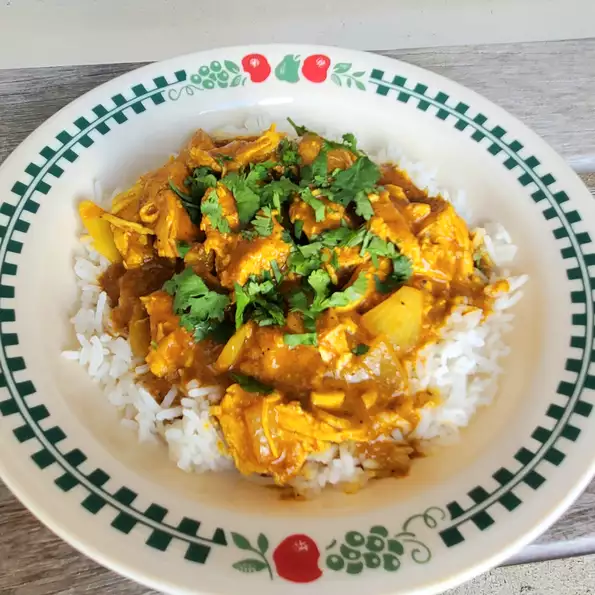

Slow Cooker Chicken Curry

Description
This slow cooker chicken curry recipe couldn't be easier! The ingredients
all go in at the same time and in just a few hours, dinner's ready! Serve
over cauliflower rice sauteed with Indian spices, and garnish with fresh
cilantro and a dollop of light sour cream.
Ingredients
- 3 pounds skinless, boneless chicken breast halves
- 2 (14 ounce) cans coconut milk
- 2 onions, diced
- 4 tablespoons tomato paste
- 4 tablespoons minced fresh garlic
- 4 tablespoons minced fresh ginger
- 1 tablespoon ground cumin
- 1 tablespoon ground turmeric
- 1 tablespoon garam masala (Optional)
- 1 tablespoon ground coriander
- 1 tablespoon curry powder
- 4 bay leaves
- 1 cinnamon stick
- salt and ground black pepper to taste
Steps
-
Add chicken, coconut milk, onions, tomato paste, garlic, ginger, cumin,
turmeric, garam masala, coriander, curry powder, bay leaves, cinnamon
stick, salt, and pepper to a slow cooker.
-
Cook on High until chicken is no longer pink in the center and the
juices run clear, 2 to 3 hours. An instant-read thermometer inserted
into the center should read at least 165 degrees F (74 degrees C).
Remove and discard the bay leaves and cinnamon stick. Shred the chicken.